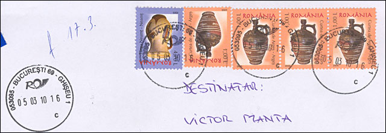
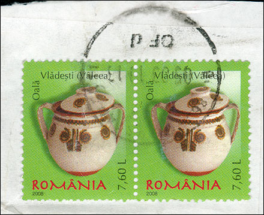
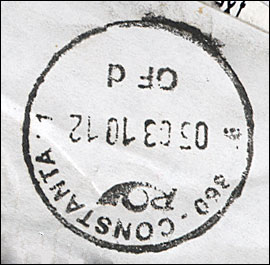
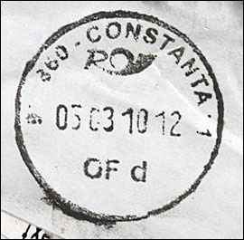
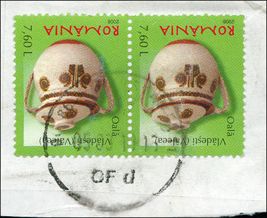

|
GOOD AND BAD ROMANIAN CANCELATIONS IN 2010 Illustrated by March 2010 Covers and Parcels, sent from RO to CH |
Let's start with a registered letter, sent to me on the 5th of March 2010. On the left side it is obvious that the cancel is of good quality. The Post Office No. 69 is just one of many postal offices in Bucharest, being positioned in Str. Modrogan Ene No. 4, outside the central part of the city.

Obviously the quality of the cancellation device, as well as of the ink are good, and so are also the cancellations on the stamps. One can read the relevant data on quite all cancels. The rotated position of the first two stamps on the cover is an indication that this registered letter, paid 8.70 Lei, wasn't sent by a stamp collector.


Above I show the two stamps affixed to a parcel, sent by chance on the same day of 5th of March 2010 but this time from the city of Constanta. The difference in quality of the cancellation on the letter sent from Bucharest and that found on the parcel sent from Constanta are, like the Romanians say, like between heaven and earth.


Even more, the cancel on the parcel's stamps and the one applied directly on the parcel's paper seems to be different and/or applied on different moments of time. The cancel on the parcel's paper clearly reads 05 03 10 12 (which means 5th of March 2010 12:00) and that on stamps apparently reads 05 03 10 13 (which means 5th of March 2010 13:00) . I have found no explanations for this difference of one hour between the both cancels.
The Post Office 1 in Constanta is positioned on the Bldv. Tomis No. 79 - 81. If I still remember well, this is the central street in Constanta, and the PO 1 should be the most important one, situated in the second biggest city of Romania.
| Published:
03/15/2010. Revised: 03/15/2010. Copyright © 2010 by Victor Manta, Switzerland. All rights reserved worldwide. |